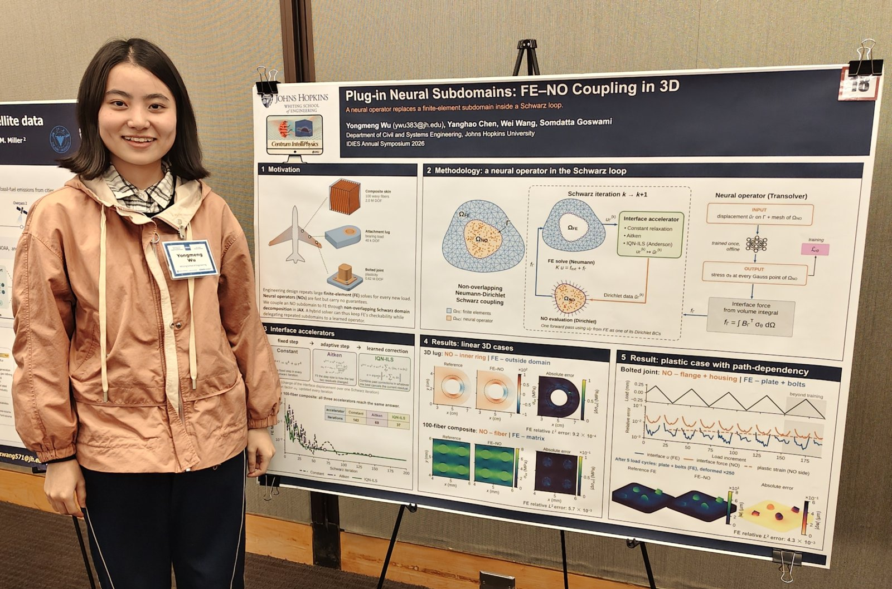
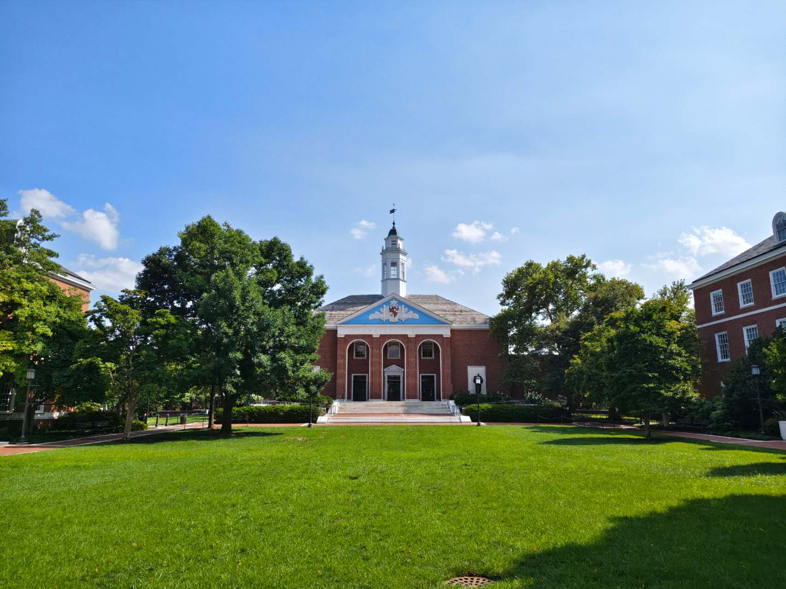
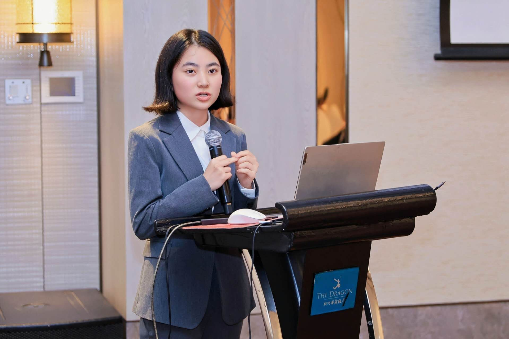
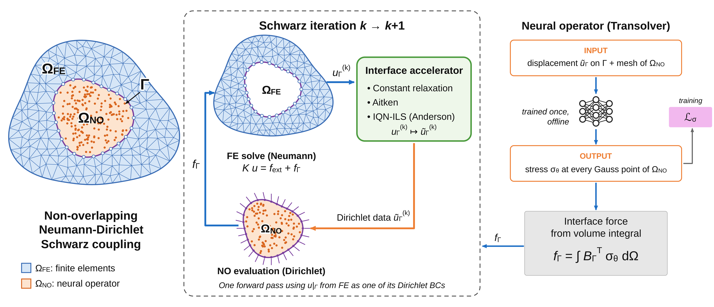
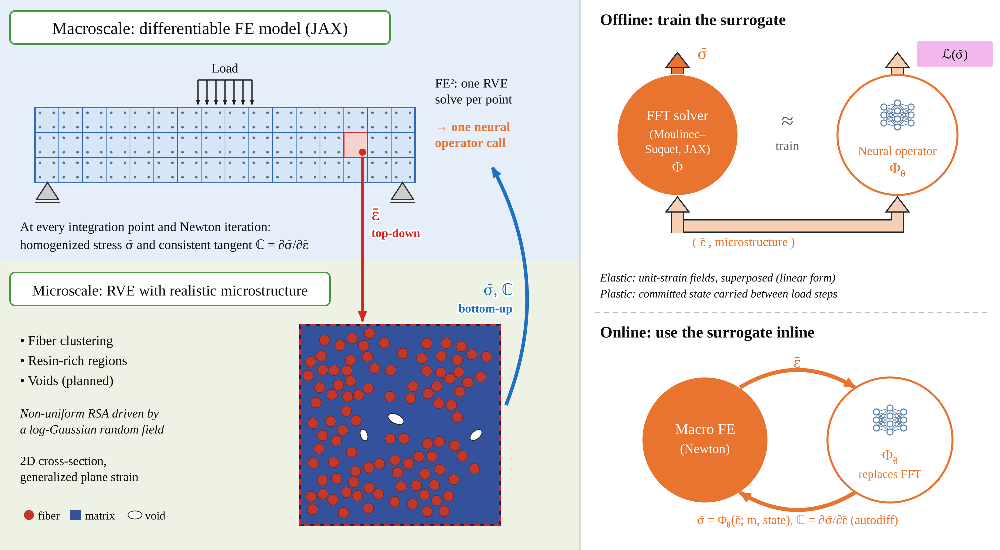
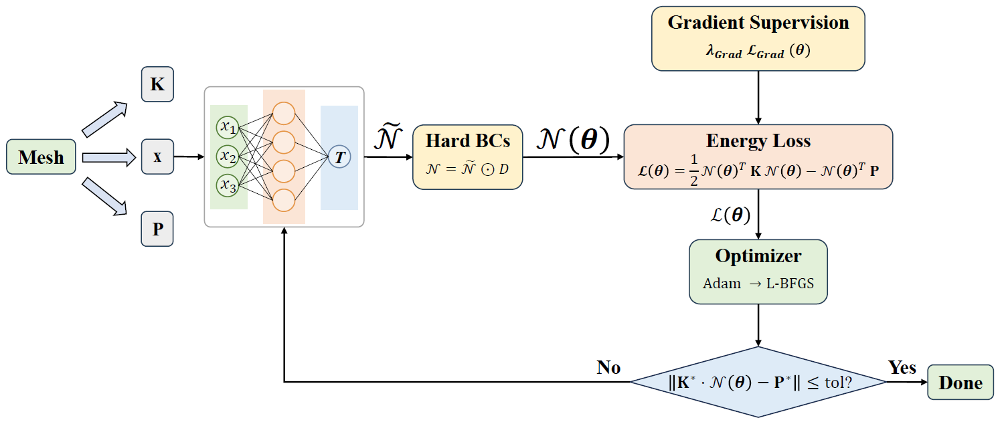

News
- Oct 2026 Presented a poster, Plug-in Neural Subdomains: FE–NO Coupling in 3D, at the IDIES Annual Symposium 2026 at Johns Hopkins University.

- Aug 2026 Started a collaboration with Prof. Satyajit Mojumder (Washington State University) on neural operators for multiscale problems.
- Jul 2026 Arrived in U.S. to work as an intern in the Centrum IntelliPhysics Lab at Johns Hopkins University.

- May 2026 Gave an oral presentation in English on DFEM at the ‘101 Project’ Undergraduate Forum in Mechanics in Hangzhou, representing Tongji University.

- Apr 2026 Began research with Prof. Somdatta Goswami's group at Johns Hopkins University.
|
Research
I build hybrid solvers that combine classical numerical methods with machine learning.
A question keeps coming up in my work: when a learned model sits inside a numerical solver, whether as a
subdomain in domain decomposition or as the constitutive law at every integration point of a multiscale
simulation, sometimes it is not enough to just guarantee the accuracy of its values; its derivatives matter as well.
I'm interested in making such solvers reliable, scalable and differentiable, with applications to composite materials.
|
Projects
-
Coupling Finite Elements and Neural Operators via Domain Decomposition
Ongoing, unpublished | Johns Hopkins University | Apr 2026 – present

A GPU-accelerated JAX solver that couples finite element and neural operator (Transolver) subdomains through
non-overlapping Neumann–Dirichlet domain decomposition, with constant, Aitken and IQN-ILS (Anderson-type) interface accelerators,
scaled from a 2D cylinder to a 3D fiber composite with 100 learned subdomains and a J2-plastic bolted joint under cyclic loading.
-
Multiscale Modeling of Fiber Composites with Neural Operator RVE Surrogates
Ongoing, unpublished | collaborating with Prof. Satyajit Mojumder (WSU) | Aug 2026 – present

Replacing the RVE solve at every macroscale integration point of FE² with a neural operator that takes
realistic microstructures (e.g. fiber clustering and resin-rich regions) and returns homogenized stress, with consistent tangents
from automatic differentiation inside a differentiable JAX finite element solver.
-
Enhancing Deep Finite Element Method (DFEM) for Heterogeneous Heat Transfer via Exact Boundary Constraints and Gradient Supervision
Yongmeng Wu
Manuscript in revision | oral presentation in English at ‘101 Project’ Undergraduate Forum in Mechanics, 2026

Hard Dirichlet constraints via distance functions, Fourier features and gradient supervision at material
interfaces give relative L2 errors below 0.1% on 2D benchmarks and about 0.3% on a 3D woven
composite; parametric warm-starting is about 10× faster than conventional FEM.
|
Awards
- First Prize (Individual & Team) | 6th International Engineering Mechanics Contest (Asian Region) | Dec 2025
- Second Prize | 15th National Zhou Peiyuan Mechanics Competition | July 2025
- First Prize | 16th Chinese Mathematics Competition for College Students | Dec 2024
|
|